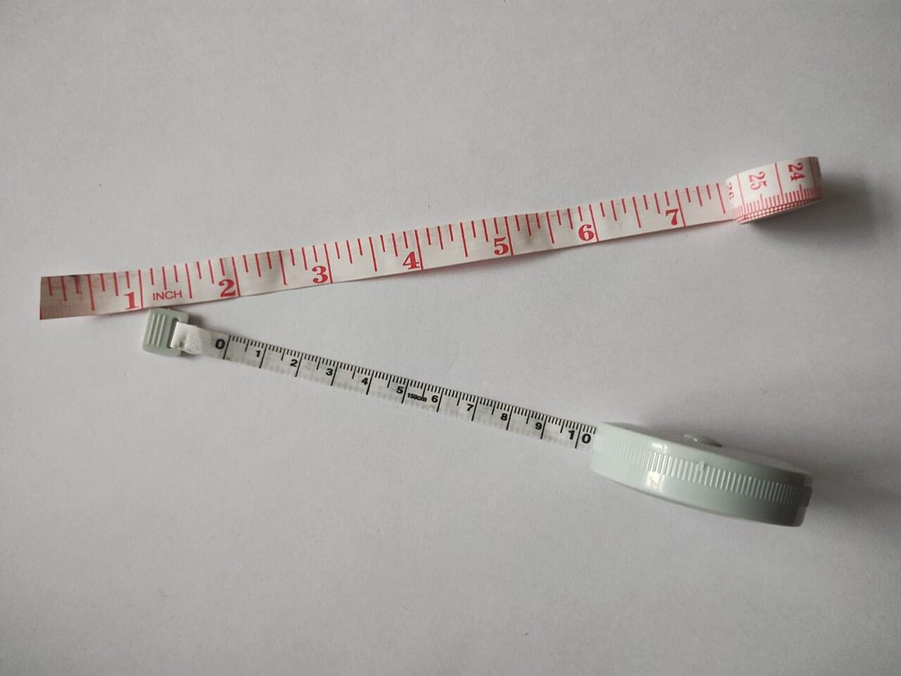
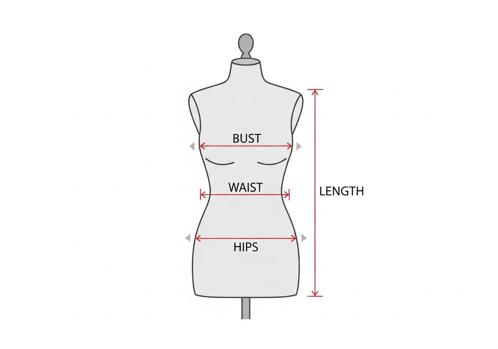
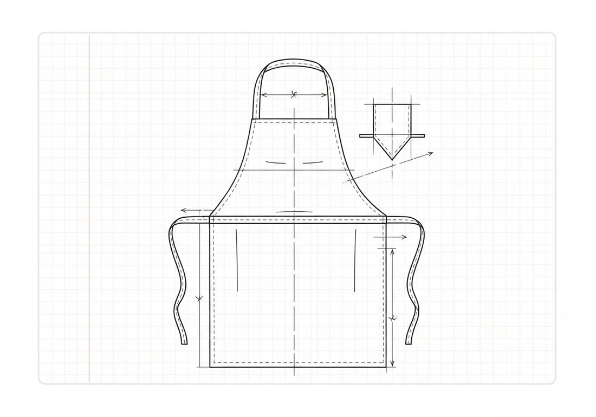
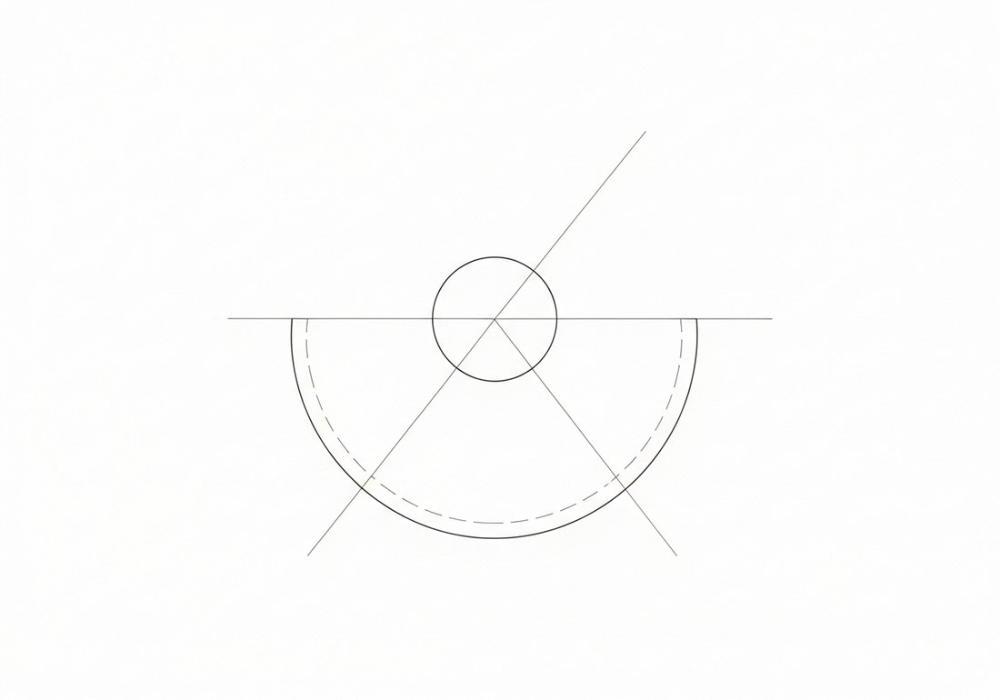

Көркем еңбек · 3-бөлім · Киім пішу және тігу Art & Craft · Section 3 · Sewing & Pattern-making Художественный труд · Раздел 3 · Конструирование и пошив одежды
📏 Өлшем алу және құрастыру (алжапқыш / юбка)
📏 Taking Measurements & Drafting (Apron / Skirt)
📏 Снятие мерок и конструирование (фартук / юбка)
Дұрыс өлшемнен — дұрыс пішінге дейін: дайын бұйым осыдан басталады. From the right measurement to the right pattern — a finished garment starts here. От точной мерки к точной выкройке — с этого начинается готовое изделие.
Өлшем алу (снятие мерок) — болашақ бұйымды дәл өлшеу үшін денеден сандық деректер жинау. Құрастыру (конструирование) — сол өлшемдер бойынша қағазда бұйымның жайылмасын (выкройка) тұрғызу. Қате алынған бір өлшем бүкіл бұйымды бүлдіреді: киім тарылып не үлкейіп кетеді. Сондықтан өлшемді мұқият, бір ретпен әрі денеге қатты қыспай аламыз. Бұл плакатта алжапқыш пен қарапайым юбканы (юбка-полусолнце) құрастыру жолын көреміз. Taking measurements means collecting numeric data from the body so a future garment can be cut accurately. Drafting (construction) means building the garment's flat pattern on paper from those measurements. One wrong measurement spoils the whole garment — it ends up too tight or too loose. So we measure carefully, in a fixed order, without pulling the tape tight against the body. On this poster we look at how to draft an apron and a simple half-circle skirt. Снятие мерок — это сбор числовых данных с фигуры, чтобы будущее изделие было выкроено точно. Конструирование — это построение на бумаге плоской выкройки изделия по этим меркам. Одна неверная мерка портит всю работу: вещь получается слишком узкой или слишком широкой. Поэтому мерки снимают аккуратно, в одном и том же порядке и не натягивая ленту туго на тело. На этом плакате мы разберём, как построить фартук и простую юбку-полусолнце.
Құрал және өлшем нүктелері The Tool & Where to Measure Инструмент и точки измерения

Негізгі құрал — жұмсақ сантиметрлік таспа. Тағы керек: иық таяқшасы, бор, ине-түйреуіш, дәптер. Өлшенетін адам тік тұрып, табиғи қалыпта болуы керек. The main tool is a soft measuring tape. You also need: a ruler, tailor's chalk, pins and a notebook. The person being measured stands straight and relaxed in a natural pose. Главный инструмент — мягкая сантиметровая лента. Ещё понадобятся: линейка, портновский мел, булавки и тетрадь. Тот, кого измеряют, стоит прямо, в естественной позе.

🔍 Үлкейту үшін схеманы басыңыз🔍 Tap the scheme to enlarge🔍 Нажмите на схему, чтобы увеличить
Негізгі өлшемдер және олардың белгіленуі Main Measurements & Their Symbols Основные мерки и их обозначения
Шеңбер өлшемдерін жартыға бөліп жазамыз (С әрпі — жарты шеңбер), себебі сызбада бұйымның тек жартысын тұрғызамыз. Girth measurements are written as halves (the letter С = half-girth), because on the draft we build only one half of the garment. Мерки обхватов записывают в половинном размере (буква С — полуобхват), потому что на чертеже строят только половину изделия.
| Мерка | Обознач. | Где и как снимают |
|---|---|---|
| Полуобхват талии | Ст | По самому узкому месту талии; ленту замыкают на боку. Записывают половину обхвата. |
| Полуобхват бёдер | Сб | По самым выступающим точкам бёдер, лента строго горизонтальна. Записывают половину обхвата. |
| Полуобхват груди | Сг | По самым выступающим точкам груди, лента горизонтальна. Нужна для фартука с грудкой. |
| Длина изделия | Ди | От линии талии вниз до нужной длины (юбки или нижней части фартука). |
| Длина нагрудника | Дн | Для фартука: от талии вверх до верха грудки. |
| Өлшем | Белгі | Қайдан, қалай алынады |
|---|---|---|
| Бел жарты шеңбері | Ст | Белдің ең жіңішке жерінен; таспа бүйірден түйіседі. Шеңбердің жартысы жазылады. |
| Жамбас жарты шеңбері | Сб | Жамбастың ең шығыңқы нүктелерінен, таспа қатаң көлденең. Шеңбердің жартысы жазылады. |
| Кеуде жарты шеңбері | Сг | Кеуденің ең шығыңқы нүктелерінен, таспа көлденең. Көкіректі алжапқышқа қажет. |
| Бұйым ұзындығы | Ди | Бел сызығынан төмен керекті ұзындыққа дейін (юбка не алжапқыш етегі). |
| Көкірекше ұзындығы | Дн | Алжапқыш үшін: белден жоғары көкіректің үстіне дейін. |
| Measurement | Symbol | Where & how it is taken |
|---|---|---|
| Half-waist girth | Ст | Around the narrowest part of the waist; the tape closes at the side. Half of the girth is recorded. |
| Half-hip girth | Сб | Around the most prominent points of the hips, tape strictly horizontal. Half of the girth is recorded. |
| Half-bust girth | Сг | Around the most prominent points of the bust, tape horizontal. Needed for a bibbed apron. |
| Garment length | Ди | From the waist line down to the required length (of the skirt or apron lower part). |
| Bib length | Дн | For the apron: from the waist up to the top of the bib. |
Өлшем алу ережелері Rules for Taking Measurements Правила снятия мерок
🧍 Тік тұруStand straightСтоять прямо
Өлшенетін адам табиғи қалыпта, иіліп тұрмайды.The person stands naturally, without slouching.Человек стоит естественно, не сутулясь.
📐 Көлденең таспаTape levelЛента ровно
Шеңберлерді қатаң көлденеңінен өлшейміз.Take girths strictly horizontally.Обхваты снимают строго горизонтально.
🤏 ҚыспауDon't pull tightНе затягивать
Таспаны тым қатты тартпай, еркін ұстаймыз.Hold the tape snug but not tight.Ленту держат плотно, но не туго.
➕ Еркіндік қосуAdd easeПрибавка
Еркін қозғалыс үшін өлшемге прибавка қосылады.Ease is added for free movement.К мерке добавляют прибавку на свободу.
Алжапқышты құрастыру Drafting an Apron Конструирование фартука
Алжапқыш — бастаушыға ең қарапайым бұйым: түзу бұрыштар мен тікбұрыштардан тұрады. An apron is the simplest project for a beginner: it is built from right angles and rectangles. Фартук — самое простое изделие для начинающих: он строится из прямых углов и прямоугольников.

🔍 Сызбаны үлкейту үшін басыңыз🔍 Tap to enlarge the draft🔍 Нажмите, чтобы увеличить чертёж
Етек.Skirt part.Нижняя часть. Ені — белдің жартысынан сәл артық, биіктігі — қажетті ұзындық (Ди). Тікбұрыш саламыз.Width a little over half the waist, height the required length (Ди). Draw a rectangle.Ширина — чуть больше половины талии, высота — нужная длина (Ди). Чертим прямоугольник.
Көкірекше.Bib.Грудка. Жоғарыда кішірек тікбұрыш: ені кеудеден тар, биіктігі — Дн.A smaller rectangle on top: narrower than the chest, height Дн.Сверху меньший прямоугольник: уже груди, высота — Дн.
Белбеу мен баулар.Waistband & ties.Пояс и завязки. Ұзын жолақтар: бел айналасын байлап, артынан түйіледі.Long strips that tie around the waist and knot at the back.Длинные полосы: обхватывают талию и завязываются сзади.
Мойын ілмегі.Neck loop.Бретель на шею. Көкіреше жоғарысынан мойынға өтетін жолақ.A strap from the top of the bib that goes over the neck.Полоса от верха грудки, надевается на шею.
Тігіс қосымшасы.Seam allowance.Припуски. Барлық жиекке 1–1,5 см припуск қосамыз (үзік сызық).Add 1–1.5 cm allowance to every edge (the dashed line).Ко всем краям прибавляем 1–1,5 см припуска (пунктир).
«Юбка-полусолнце» құрастыру Drafting a Half-Circle Skirt Конструирование юбки-полусолнце
Бұл юбка екі шеңбер доғасынан тұрады: кіші доға — бел, үлкен доға — етек. Бар керегі — бел өлшемі мен ұзындық. This skirt is built from two arcs: the small arc is the waist, the big arc is the hem. All you need is the waist measurement and the length. Эта юбка строится из двух дуг: малая дуга — талия, большая — низ. Нужны лишь обхват талии и длина.
Бел радиусын табу.Find the waist radius.Найти радиус талии. Толық бел шеңберін формулаға саламыз (төменде R).Put the full waist girth into the formula below (R).Полный обхват талии подставляем в формулу ниже (R).
Бел доғасы.Waist arc.Дуга талии. Орталық нүктеден R радиуспен кіші жарты доға саламыз.From the centre point draw a small semicircular arc of radius R.Из центра радиусом R чертим малую полудугу.
Етек доғасы.Hem arc.Дуга низа. Сол нүктеден (R + Ди) радиуспен үлкен доға саламыз.From the same point draw a big arc of radius (R + length).Из той же точки радиусом (R + Ди) чертим большую дугу.
Қию.Cut out.Вырезать. Екі доға арасын қиямыз — жарты шеңбер юбка дайын.Cut between the two arcs — the half-circle skirt is ready.Вырезаем между дугами — полукруглая юбка готова.
Неліктен 3,14? Жарты-күн юбкасы — жарты шеңбер, ал шеңбер ұзындығы = π × диаметр. Сондықтан бел доғасының радиусы белді π-ге бөлгенге тең.Why 3.14? A half-sun skirt is a semicircle, and circumference = π × diameter. So the radius of the waist arc equals the waist divided by π.Почему 3,14? Юбка-полусолнце — это полукруг, а длина окружности = π × диаметр. Поэтому радиус дуги талии равен обхвату талии, делённому на π.

🔍 Сызбаны үлкейту үшін басыңыз🔍 Tap to enlarge the draft🔍 Нажмите, чтобы увеличить чертёж
✅ Есте сақта ✅ Remember ✅ Запомните
1
Шеңбер өлшемдерін жартыға бөліп жазамыз (С — жарты шеңбер).Girths are recorded as halves (С = half-girth).Обхваты записывают в половинном размере (С — полуобхват).
2
Сызбада әрқашан тігіс қосымшасын (припуск) қалдырамыз.Always leave a seam allowance on the draft.На чертеже всегда оставляют припуск на швы.
3
Бір рет өлшеп — екі рет тексер: дәл өлшем — сәтті бұйым.Measure once, check twice: an exact measurement means a successful garment.Семь раз отмерь: точная мерка — удачное изделие.
Дұрыс алынған өлшем мен мұқият сызба — кез келген киімнің негізі. Алжапқыш пен жарты-күн юбкасы — осы дағдыны меңгерудің алғашқы әрі ең жақсы қадамы. Accurate measurements and a careful draft are the foundation of any garment. An apron and a half-circle skirt are the first and best step to mastering this skill. Точные мерки и аккуратный чертёж — основа любой одежды. Фартук и юбка-полусолнце — первый и лучший шаг к освоению этого мастерства.